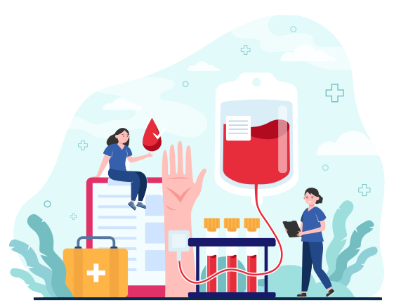

Drop of Life
This pandemic has increased the demands for various medical resources. from oxygen cylinders to antiviral drugs, a lot of COVID-19 patients are struggling to get basic health amenities. Additionally, there has been a growing requirement for plasma to treat patients in severe condition.